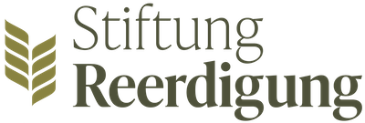

Stiftung Reerdigung
Die gemeinnützige Stiftung Reerdigung setzt sich für die Verbreitung und Akzeptanz der nachhaltigen Bestattungsform Reerdigung ein. Durch Aufklärung und Forschungsprojekte fördert sie den Umwelt- und Klimaschutz in der Bestattungskultur. Sterben, Tod und Trauer sind ein natürlicher Teil des Lebens. Die Stiftung Reerdigung macht sich stark dafür, dass Menschen gut informiert und selbstbestimmt über ihren letzten Fußabdruck entscheiden können.
